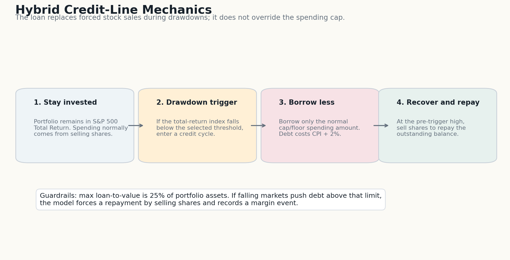
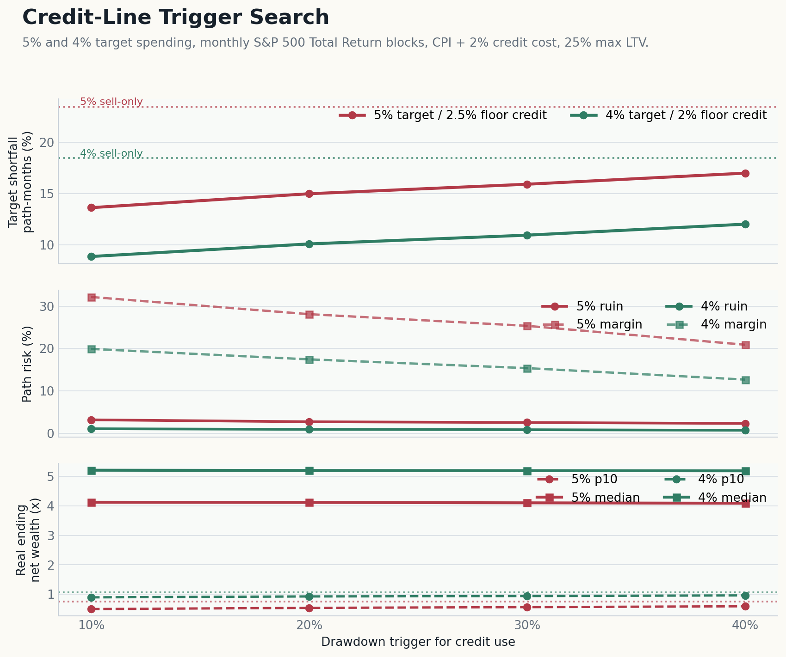

Executive Summary
The credit-line strategy is a substitute for a cash buffer, not a free source of retirement income. It tries to solve one specific problem: do not sell equities after the market has already fallen.
The model keeps the retiree fully invested in the S&P 500 Total Return index. When the index falls below a selected drawdown threshold, monthly target spending is borrowed against the portfolio at a real cost of 2% above inflation. When the index recovers to the pre-trigger high, the loan is repaid by selling shares.
This is the generous version of the credit-line idea: the line is used to protect target lifestyle spending, not just the minimum floor. That makes the upside visible, but it also exposes the full leverage tradeoff.
The result is mixed. The credit line can reduce target shortfall because it lets spending continue during drawdowns. But it introduces a new risk: debt and forced repayment. In the central version here, the loan is capped at 25% loan-to-value, and paths that breach that cap require forced selling.
A credit line is not cash with a clever label. It is temporary leverage. It may be useful, but the model has to count interest, collateral limits, forced-sale risk, and the repayment drag after recovery.
Setup
This report uses monthly data because credit-line triggers and paybacks are path-dependent. Annual data is too coarse for this specific question.
Data
- S&P 500 Total Return: Yahoo/yfinance
^SP500TR. - Inflation: FRED monthly CPI-U,
CPIAUCSL. - Aligned completed monthly window: Feb 1988 to Apr 2026.
- 458 paired monthly records.
Simulation
- 20,000 random 30-year paths.
- 5-year monthly blocks sampled with replacement.
- Two spending paths: 5% target / 2.5% floor and 4% target / 2% floor, all real.
- Credit cost: CPI + 2%, modeled as 2% real.
- Maximum loan-to-value: 25% of portfolio assets.
target = 5.0% or 4.0% of initial portfolio / 12 each month
floor = 50% of target spending
cap = target rate / 12 of current real net wealth
normal spending = min(net wealth, max(floor, min(target, cap)))
if drawdown trigger is active:
borrow target spending when collateral capacity is available
repay debt after the total-return index recovers to the pre-trigger high

Results
The tables compare the sell-only baseline against credit lines triggered at 10%, 20%, 30%, and 40% drawdowns from the S&P 500 Total Return high-water mark. The 4% path is the same strategy with lower spending pressure.
5% target / 2.5% floor
| Strategy | Trigger | Ruin | Target shortfall | Floor breach | Real final p10 | Real final median | Ever used credit | Margin event |
|---|---|---|---|---|---|---|---|---|
| Sell only | n/a | 0.62% | 23.50% | 0.08% | 0.74x | 4.06x | 0.00% | 0.00% |
| 10% trigger | 10% | 3.17% | 13.62% | 0.62% | 0.50x | 4.13x | 100.00% | 32.16% |
| 20% trigger | 20% | 2.72% | 14.98% | 0.53% | 0.54x | 4.12x | 97.50% | 28.10% |
| 30% trigger | 30% | 2.54% | 15.91% | 0.50% | 0.56x | 4.10x | 88.83% | 25.35% |
| 40% trigger | 40% | 2.32% | 16.99% | 0.44% | 0.59x | 4.09x | 81.69% | 20.89% |
4% target / 2% floor
| Strategy | Trigger | Ruin | Target shortfall | Floor breach | Real final p10 | Real final median | Ever used credit | Margin event |
|---|---|---|---|---|---|---|---|---|
| Sell only | n/a | 0.11% | 18.47% | 0.01% | 1.07x | 5.14x | 0.00% | 0.00% |
| 10% trigger | 10% | 1.07% | 8.85% | 0.17% | 0.89x | 5.21x | 100.00% | 19.91% |
| 20% trigger | 20% | 0.92% | 10.08% | 0.14% | 0.92x | 5.20x | 97.50% | 17.44% |
| 30% trigger | 30% | 0.84% | 10.93% | 0.13% | 0.94x | 5.20x | 88.83% | 15.37% |
| 40% trigger | 40% | 0.71% | 12.01% | 0.11% | 0.96x | 5.19x | 81.69% | 12.67% |

Debt Risk
Borrowing improves lifestyle only when the line is actually used. But more use also means more months with debt outstanding and more exposure to collateral limits.
5% target / 2.5% floor
| Strategy | Ever used credit | Median debt months if used | 95th pct peak debt | Ever miss target | Avg shortfall gap | Integrated target loss |
|---|---|---|---|---|---|---|
| 10% trigger | 100.00% | 123 | 39.43% | 79.42% | 32.6% | 4.44% |
| 20% trigger | 97.50% | 93 | 37.85% | 84.91% | 30.3% | 4.53% |
| 30% trigger | 88.83% | 80 | 36.12% | 85.45% | 29.2% | 4.65% |
| 40% trigger | 81.69% | 66 | 33.24% | 86.54% | 28.3% | 4.81% |
4% target / 2% floor
| Strategy | Ever used credit | Median debt months if used | 95th pct peak debt | Ever miss target | Avg shortfall gap | Integrated target loss |
|---|---|---|---|---|---|---|
| 10% trigger | 100.00% | 123 | 35.82% | 75.79% | 27.6% | 2.44% |
| 20% trigger | 97.50% | 93 | 34.26% | 82.05% | 25.5% | 2.57% |
| 30% trigger | 88.83% | 80 | 32.93% | 82.60% | 24.7% | 2.70% |
| 40% trigger | 81.69% | 66 | 30.56% | 83.83% | 24.1% | 2.90% |
The 95th percentile peak debt is shown as a percentage of the starting portfolio. With a $5M starting portfolio, 10% peak debt means a $500,000 real loan balance.
Interpretation
The credit line is most attractive when it is used rarely, at moderate drawdowns, and repaid after a strong recovery. It is least attractive when markets continue falling after borrowing begins. That is exactly when an asset-backed lender can reduce available credit, raise collateral requirements, or force sales.
Compared with cash and bonds, the credit line preserves upside because the portfolio stays invested until a drawdown actually happens. That is the appealing part. The cost is that the bad case is more operationally fragile: the retiree now depends on lending terms, collateral capacity, and the ability to tolerate debt during the same market stress that caused the borrowing.
Limitations And Next Tests
- The direct total-return data begins in 1988, so the bootstrap window is much shorter than the annual 75-year report.
- Five-year blocks on a 1988-present monthly sample can overfit modern market history.
- Taxes, asset-backed lending fees, variable spreads, and lender discretion are ignored.
- The model assumes credit remains available until the LTV limit is hit; real lenders can change terms earlier.
- The model uses S&P 500 Total Return as the whole portfolio, not a diversified taxable account with concentrated-position haircuts.
- The next useful tests are different LTV caps, 1%-4% real credit spreads, 35- and 40-year horizons, and a hybrid rule that borrows only floor spending rather than target spending.